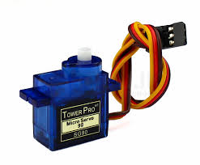

Used for video stabilization
Many times such platforms are required for recording the running of runners in olympics.
Used for Surgery platforms
It can be used in stabilization of surgery platforms by the doctors.
Used in ships or vehicles
Used in ships or vehicles to develop anti-motion sickness seats.
Used in making earthquake proof buildings
Same mechanism applied in inself balancing scooter also known as hoverboard.
Arduino Uno
The processing unit or the micro-controller unit takes reading from the sensor and according calculates the angle and accordingly controls the platform with servo motor.
MPU6050 MEMS Sensor
MPU6050 is a MEMS Sensor with an accelerometer and gyro sensor in a single chip. It is very accurate and has an internal 16-bit ADC for each channel. And the sensors interface easily to Arduino using I2C protocol.

Servo-Motor
For Motors we have decided to use Servo motor as it is very easy to operate and has internal feedback mechanism so no external feedback is required for the platform. Over here we have used MG90 Metal gear Servo Motor.
Bread Board
Board over which all the components were placed and all the connections were done. You can find it easily in any online store or any hardware store nearby. Make sure to keep all the connections tight.
Jumper Wires
They are male or female wires which were used for making the connections for the circuit.
40W Glue Gun
Glue gun is basically a portable device which dispense hot melted adhesives.
Glue Stick
This is a Hot Melt Glue Stick also called as Glue Stick pr Hot Melt Adhesive it is used with Glue Guns. The glue is tacky when hot, and solidifies in a few seconds to one minute.
Kalman Filter
Kalman filtering is an algorithm that provides estimates of some unknown variables given the measurements observed over time. Kalman filters have been demonstrating its usefulness in various applications.